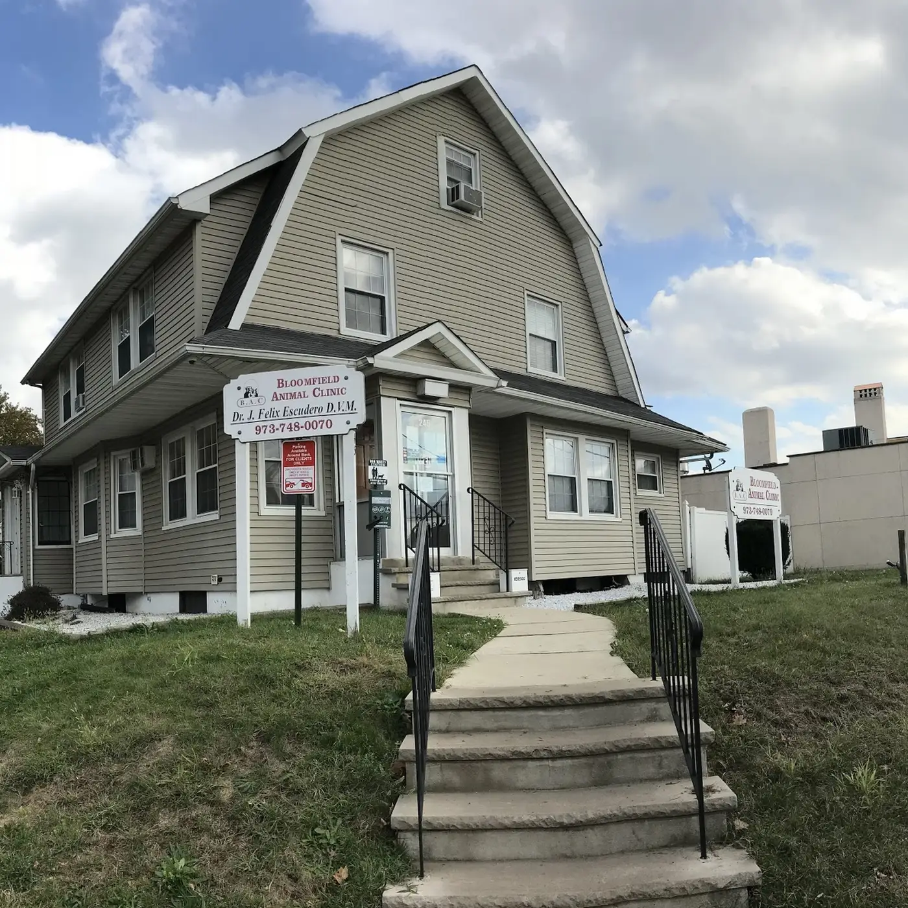
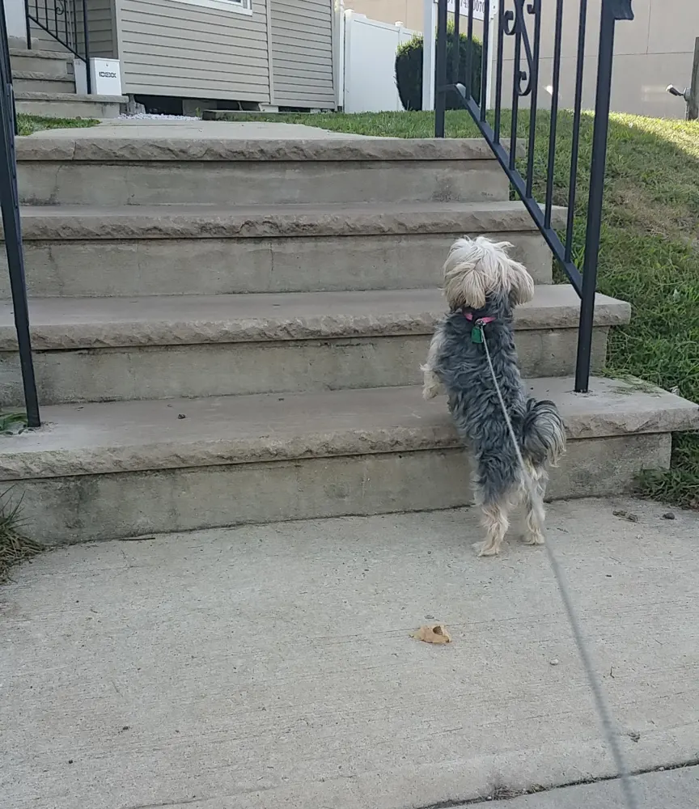
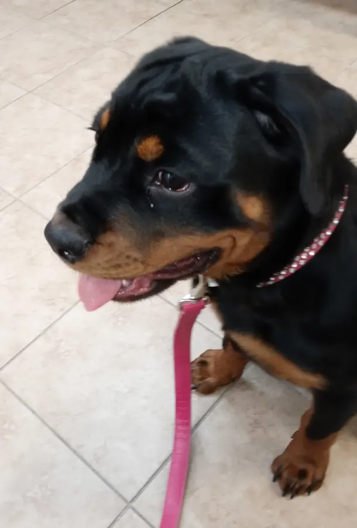
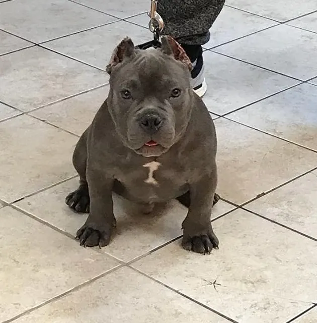

Preventive care
- Vaccinations
- Preventive services

Concept preview · Veterinarian
Dr. J Felix Escudero, DVM
Care that listens.
For the pets you call family.
Call for today's hours and appointments.
Care for small animals
From vaccinations to medical and surgical care, start with a conversation about what your pet needs.
Call to confirm available services and fees before your visit.
Your veterinarian
Public clinic profiles identify Dr. Felix Escudero as the clinic’s medical director, with experience in small-animal medicine and surgery.
Talk with the clinicCall to ask whether the clinic is accepting your pet as a new patient, what records to bring, and whether an appointment deposit is required.
Ask the clinic directly about payment options and support for pet-insurance claims. No specific insurance or financing provider has been confirmed.
Words from pet parents
4.3 on Google. Real excerpts from public reviews of the clinic.
They listen, they acknowledge, they care.
I really recommend this location and doctor, very knowledgeable.
The staff is so caring and compassionate
Around the clinic’s listing
Pet photos from public listings.



Find us in Bloomfield
Hours & appointments
Call for today's hours.
245 Bloomfield Ave · Bloomfield, NJ
Plan a visit
Call the clinic to request an appointment. This form is a design preview: it does not send a message or reserve a visit.